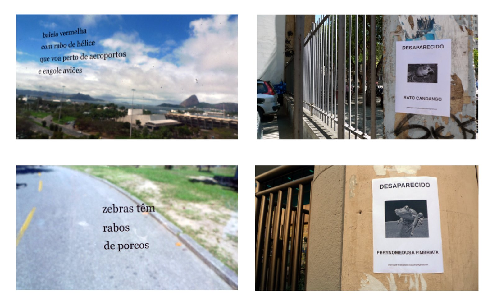
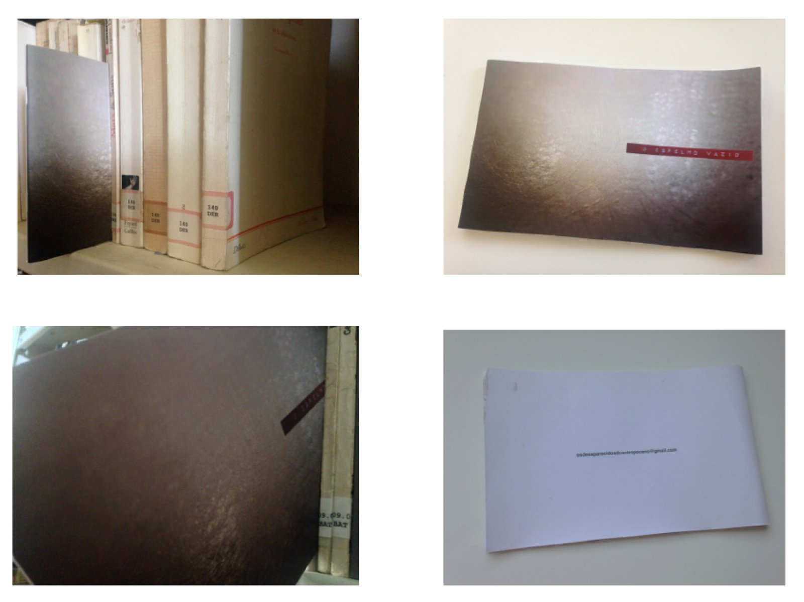

espelho vazio : pequeno memorial efêmero para os desaparecidos da ditadura do antropoceno (the empty mirror: a tiny ephemeral memorial to the missing of the anthropocene’s dictatorship)


2014
livro de guerrilha
(guerilla book)
10 cm x 14 cm
ação feita em arquivos da cidade do rio de janeiro
(action made in the archives of the city of rio de janeiro)